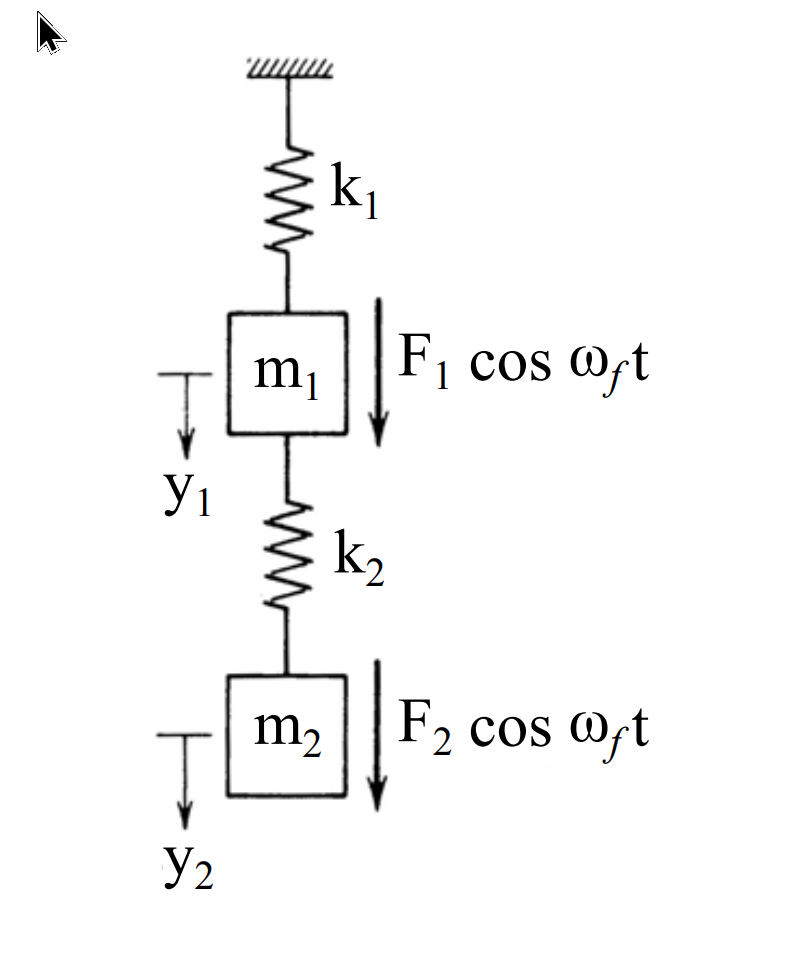

考題編號：SD-2007-2
主分類： SD-U1-3 多自由度系統之動態分析
副分類： SD-U1-2 運動方程式推導
分析方法： MDOF 模態分析
標籤： MDOF 兩自由度 運動方程式 模態頻率 特徵值問題 共振 串聯彈簧質量系統
1. 原始題目重述 (Problem Restatement)
右圖為兩自由度串聯彈簧-質量振動系統（無阻尼），由上至下：
- 頂端固定牆 → 彈簧 $k_1$ → 質量 $m_1$（位移 $y_1$，受外力 $F_1 \cos\omega_f t$ 向下）
- 彈簧 $k_2$ → 質量 $m_2$（位移 $y_2$，受外力 $F_2 \cos\omega_f t$ 向下）

圖說：無阻尼兩自由度串聯系統。$y_1$、$y_2$ 為向下正方向位移。彈簧 $k_1$ 一端固定於牆，另端連接 $m_1$；彈簧 $k_2$ 連接 $m_1$ 與 $m_2$。外力均為諧和激振 $F_i\cos\omega_f t$。
子題（一）（5分）： 列出運動方程式
子題（二）（10分）： 推求模態頻率（Modal frequencies）
子題（三）（10分）： 推求何時系統發生共振現象
2. 考題核心精神與出題者意圖 (Core Concepts & Examiner's Intent)
核心精神： 兩自由度系統是 MDOF 分析的入門題型，核心在於自由體圖 → 運動方程式 → 特徵值問題 → 自然頻率，最後連結共振條件（激振頻率 = 自然頻率）。
出題者意圖：
- 測試考生能否正確寫出矩陣形式的運動方程式（尤其 $k_2$ 的正負號）
- 測試能否列出特徵值問題並求解二次方程式
- 測試共振的物理判斷條件
最常見錯誤： $m_1$ 方程式漏掉 $k_2(y_1 - y_2)$ 的恢復力，或將 $k_2$ 項符號寫錯。
3. 解題戰略地圖與陷阱分析 (Strategic Roadmap & Trap Analysis)
作戰計畫：
- 對各質量畫自由體圖，列牛頓第二定律
- 整理為矩陣形式 $[M]\{\ddot{y}\} + [K]\{y\} = \{F\}$
- 自由振動（令 $F=0$），假設 $\{y\} = \{Y\}e^{i\omega t}$，得特徵值方程
- 展開行列式，解 $\omega^2$ 的二次方程，得 $\omega_1$、$\omega_2$
- 共振條件：$\omega_f = \omega_1$ 或 $\omega_f = \omega_2$
關鍵陷阱：
| # | 陷阱 | 應對策略 |
|---|---|---|
| 1 | $m_1$ 的方程式：$k_2$ 恢復力方向 | 自由體圖明確標示；$k_2$ 提供向上的彈力 = $k_2(y_1-y_2)$ |
| 2 | 剛度矩陣反對稱分量符號 | $K_{12} = K_{21} = -k_2$（負號，互相拉近） |
| 3 | 特徵值行列式展開時的乘積項 | 仔細展開，避免遺漏 $k_2^2$ 消去 |
| 4 | 共振說明不完整 | 需說明「任一自然頻率等於激振頻率」均會共振 |
3.5 變數層次分析 (Variable Hierarchy Analysis)
複習提示：第一次解題後，在每個卡住的知識點旁標記
⚠；第二次複習時只看有⚠的項目。
最終目標
求系統兩個模態頻率 $\omega_1$、$\omega_2$，並說明共振條件 $\omega_f = \omega_1$ 或 $\omega_f = \omega_2$。
本題關鍵公式（依計算順序）
$$\text{Step 1：} [M]\{\ddot{y}\} + [K]\{y\} = \{F(t)\} \quad \text{（矩陣運動方程式）}$$
$$\text{Step 2：} \det\!\left([K] - \omega^2[M]\right) = 0 \quad \text{（特徵值方程）}$$
$$\text{Step 3：} (k_1+k_2-m_1\omega^2)(k_2-m_2\omega^2) - k_2^2 = 0 \quad \text{（行列式展開）}$$
$$\text{Step 4：} m_1 m_2\,\omega^4 - \left[m_1 k_2 + m_2(k_1+k_2)\right]\omega^2 + k_1 k_2 = 0 \quad \text{（二次方程，以 }\omega^2\text{ 為未知數）}$$
$$\text{Step 5：} \boxed{\omega_{1,2}^2 = \frac{\left[m_1 k_2 + m_2(k_1+k_2)\right] \mp \sqrt{\Delta}}{2m_1 m_2}} \quad \Delta = \left[m_1 k_2 + m_2(k_1+k_2)\right]^2 - 4m_1 m_2 k_1 k_2$$
$$\text{Step 6（共振）：} \omega_f = \omega_1 \quad \text{或} \quad \omega_f = \omega_2$$
L1：題目直接給定
| 符號 | 數值 | 說明 |
|---|---|---|
| $m_1, m_2$ | — | 兩質量 |
| $k_1, k_2$ | — | 兩彈簧勁度 |
| $\omega_f$ | — | 外力激振頻率 |
| $F_1, F_2$ | — | 外力振幅 |
L2：需知識點推導
① 建立剛度矩陣
| 符號 | 公式／來源 | 卡關? |
|---|---|---|
| $K_{11}$ | $k_1 + k_2$（兩彈簧均作用於 $m_1$） | |
| $K_{12} = K_{21}$ | $-k_2$（$k_2$ 耦合項，負號） | |
| $K_{22}$ | $k_2$（僅 $k_2$ 作用於 $m_2$） |
② 特徵值問題
| 符號 | 公式／來源 | 卡關? |
|---|---|---|
| 特徵方程 | $\det([K]-\omega^2[M])=0$ | |
| $\lambda = \omega^2$ | 二次方程之未知數 | |
| $\omega_1 < \omega_2$ | 較小根對應第一模態 |
L3：深層知識（不懂就卡住）
| 知識點 | 說明 | 卡關? |
|---|---|---|
| 剛度矩陣物理意義 | $K_{ij}$：使第 $j$ 個自由度產生單位位移，在第 $i$ 個自由度所需的力 | |
| 特徵值問題 | $([K]-\omega^2[M])\{Y\}=\{0\}$ 非零解存在條件為行列式=0 | |
| 無阻尼共振 | 激振頻率 = 任一自然頻率時，穩態振幅理論上趨向無窮大 | |
| 兩自由度系統有兩個自然頻率 | $n$ 個自由度→ $n$ 個自然頻率 |
4. 步驟化詳細計算過程 (Step-by-Step Detailed Calculation)
子題（一）：列出運動方程式
對 $m_1$ 畫自由體圖：
作用於 $m_1$ 的力：
- $k_1$ 向上彈力：$-k_1 y_1$（$y_1$ 向下為正，彈簧拉回為負）
- $k_2$ 向上彈力：$-k_2(y_1 - y_2)$（$m_1$ 比 $m_2$ 相對位移越大，$k_2$ 拉回越強）
- 外力：$F_1\cos\omega_f t$（向下）
牛頓第二定律（向下為正）：
$$m_1\ddot{y}_1 = F_1\cos\omega_f t - k_1 y_1 - k_2(y_1 - y_2)$$
整理：
$$m_1\ddot{y}_1 + (k_1+k_2)y_1 - k_2 y_2 = F_1\cos\omega_f t \tag{1}$$
對 $m_2$ 畫自由體圖：
作用於 $m_2$ 的力：
- $k_2$ 彈力：$-k_2(y_2 - y_1) = k_2(y_1 - y_2)$ 向上（$m_2$ 往下走，$k_2$ 往上拉）
- 外力：$F_2\cos\omega_f t$（向下）
$$m_2\ddot{y}_2 = F_2\cos\omega_f t - k_2(y_2 - y_1)$$
整理：
$$m_2\ddot{y}_2 - k_2 y_1 + k_2 y_2 = F_2\cos\omega_f t \tag{2}$$
矩陣形式：
$$\boxed{ \begin{bmatrix} m_1 & 0 \\ 0 & m_2 \end{bmatrix} \begin{Bmatrix} \ddot{y}_1 \\ \ddot{y}_2 \end{Bmatrix} + \begin{bmatrix} k_1+k_2 & -k_2 \\ -k_2 & k_2 \end{bmatrix} \begin{Bmatrix} y_1 \\ y_2 \end{Bmatrix} = \begin{Bmatrix} F_1\cos\omega_f t \\ F_2\cos\omega_f t \end{Bmatrix} }$$
子題（二）：推求模態頻率
自由振動（令外力 = 0），假設諧和解：
$$\{y\} = \{Y\}e^{i\omega t}$$
代入方程式，得特徵值問題：
$$\left([K] - \omega^2[M]\right)\{Y\} = \{0\}$$
$$\begin{bmatrix} k_1+k_2-m_1\omega^2 & -k_2 \\ -k_2 & k_2-m_2\omega^2 \end{bmatrix}\begin{Bmatrix} Y_1 \\ Y_2 \end{Bmatrix} = \begin{Bmatrix} 0 \\ 0 \end{Bmatrix}$$
非零解條件（行列式 = 0）：
$$\det\begin{bmatrix} k_1+k_2-m_1\omega^2 & -k_2 \\ -k_2 & k_2-m_2\omega^2 \end{bmatrix} = 0$$
$$(k_1+k_2-m_1\omega^2)(k_2-m_2\omega^2) - (-k_2)(-k_2) = 0$$
展開：
$$k_2(k_1+k_2) - m_2(k_1+k_2)\omega^2 - m_1 k_2\omega^2 + m_1 m_2\omega^4 - k_2^2 = 0$$
$$k_1 k_2 + k_2^2 - [m_1 k_2 + m_2(k_1+k_2)]\omega^2 + m_1 m_2\omega^4 - k_2^2 = 0$$
消去 $k_2^2$：
$$m_1 m_2\,\omega^4 - [m_1 k_2 + m_2(k_1+k_2)]\,\omega^2 + k_1 k_2 = 0 \tag{3}$$
以 $\lambda = \omega^2$ 代入，解二次方程：
$$\lambda = \frac{[m_1 k_2 + m_2(k_1+k_2)] \pm \sqrt{\Delta}}{2m_1 m_2}$$
其中判別式：
$$\Delta = [m_1 k_2 + m_2(k_1+k_2)]^2 - 4m_1 m_2 k_1 k_2$$
兩個自然頻率（$\omega_1 < \omega_2$，取正根）：
$$\boxed{\omega_1 = \sqrt{\frac{[m_1 k_2 + m_2(k_1+k_2)] - \sqrt{\Delta}}{2m_1 m_2}}}$$
$$\boxed{\omega_2 = \sqrt{\frac{[m_1 k_2 + m_2(k_1+k_2)] + \sqrt{\Delta}}{2m_1 m_2}}}$$
對應模態頻率（Hz）：$f_i = \omega_i/(2\pi)$；週期：$T_i = 2\pi/\omega_i$。
子題（三）：推求何時系統發生共振
共振條件： 無阻尼系統在穩態強迫振動下，當激振頻率等於任一自然頻率時，穩態振幅理論上趨向無窮大，即發生共振。
$$\boxed{\omega_f = \omega_1 \quad \text{或} \quad \omega_f = \omega_2}$$
其中 $\omega_1$、$\omega_2$ 由子題(二)求得。
物理說明：
強迫振動的穩態解可以展開為各模態的疊加，第 $i$ 個模態的參與量含有分母因子 $(1 - r_i^2)$，其中頻率比 $r_i = \omega_f/\omega_i$。
當 $\omega_f \to \omega_i$（即 $r_i \to 1$）時，$(1-r_i^2) \to 0$，該模態振幅 $\to \infty$。
結論（考場寫法）：
本系統有兩個自然頻率 $\omega_1$ 與 $\omega_2$。當激振頻率 $\omega_f$ 滿足下列條件之一，系統發生共振：
$$\omega_f = \omega_1 = \sqrt{\frac{[m_1 k_2 + m_2(k_1+k_2)] - \sqrt{\Delta}}{2m_1 m_2}}$$
或
$$\omega_f = \omega_2 = \sqrt{\frac{[m_1 k_2 + m_2(k_1+k_2)] + \sqrt{\Delta}}{2m_1 m_2}}$$
5. 關鍵爭議點與進階探討 (Critical Issues & Advanced Discussion)
1. 兩個共振頻率的物理意義
$\omega_1$（第一模態）：兩質量同向振動（低頻，長波長），$m_1$ 振幅通常大於 $m_2$。
$\omega_2$（第二模態）：兩質量反向振動（高頻），$m_1$ 與 $m_2$ 運動方向相反。
2. 有阻尼時的共振
有阻尼時振幅不趨向無窮大，但在 $\omega_f \approx \omega_d$（有阻尼自然頻率）附近仍有最大振幅，稱為「共振峰」。輕阻尼時 $\omega_d \approx \omega_n$，差異可忽略。
3. 考場時間管理
子題(一) 5 分，只需寫矩陣形式，不需展開求解。子題(二) 10 分，展開行列式並列出二次方程解即可，不需化簡為特定數字（題目未給數值）。子題(三) 10 分，明確說明物理原理 + 條件公式。